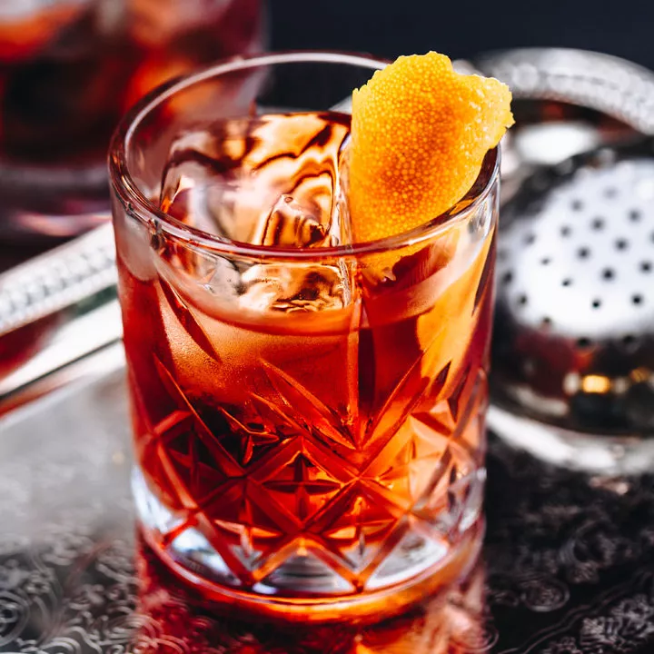

The Negroni is a popular Italian cocktail, made of one part gin,
one part vermouth rosso, and one part Campari, garnished with orange peel.
It is considered an apéritif. A traditionally made Negroni is stirred,
not shaken, and built over ice in an old-fashioned or rocks glass and
garnished with a slice of orange.
Manhattan
A Manhattan is a cocktail made with whiskey,
sweet vermouth, and bitters.
While rye is the traditional whiskey of choice,
other commonly used whiskies include Canadian whisky,
bourbon, blended whiskey, and Tennessee whiskey.
Clover Club
The Clover Club Cocktail is a cocktail consisting of gin,
lemon juice, raspberry syrup, and an egg white.
The egg white is not added for the purpose of giving the drink flavor,
but rather acts as an emulsifier.
Thus when the drink is shaken a characteristic foamy head is formed.
Old Fashioned
The old fashioned is a cocktail made by muddling sugar with bitters and water,
adding whiskey or, less commonly, brandy,
and garnishing with orange slice or zest and a cocktail cherry.
It is traditionally served in an old fashioned glass,
which predated the cocktail.
 A Manhattan is a cocktail made with whiskey,
sweet vermouth, and bitters.
While rye is the traditional whiskey of choice,
other commonly used whiskies include Canadian whisky,
bourbon, blended whiskey, and Tennessee whiskey.
A Manhattan is a cocktail made with whiskey,
sweet vermouth, and bitters.
While rye is the traditional whiskey of choice,
other commonly used whiskies include Canadian whisky,
bourbon, blended whiskey, and Tennessee whiskey.